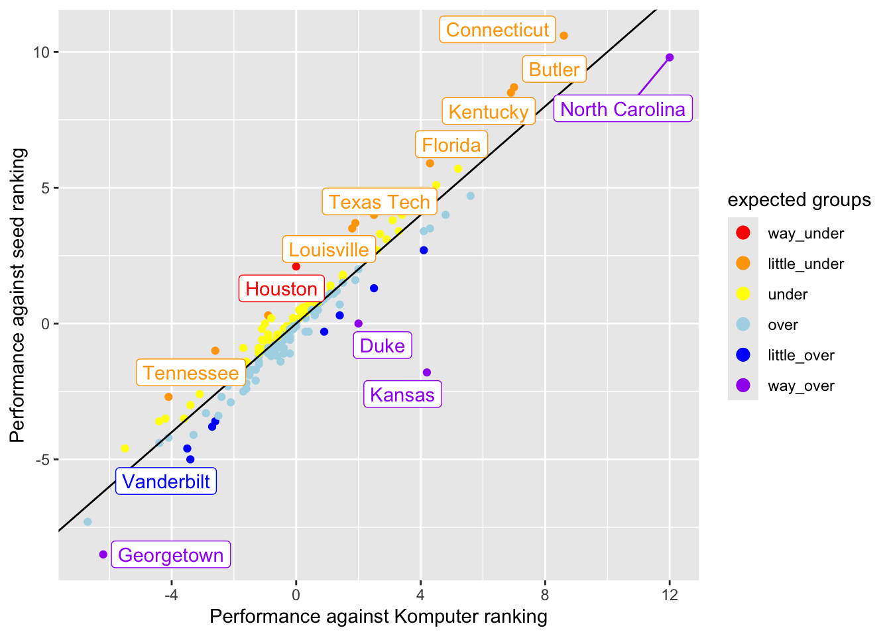
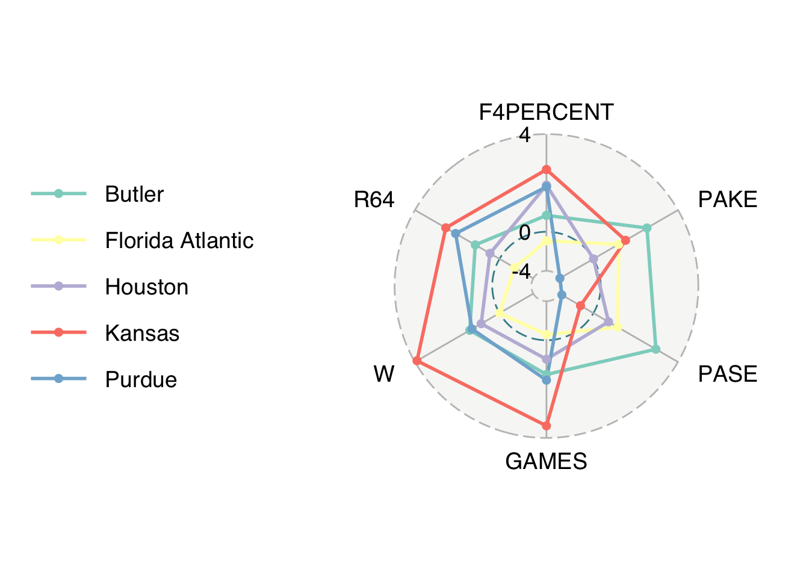

library(tidyverse) # ggplot, lubridate, dplyr, stringr, readr...
library(praise)March Madness
The Data
March is NCAA basketball March Madness! This week’s data is NCAA Men’s March Madness data from Nishaan Amin’s Kaggle dataset and analysis Bracketology: predicting March Madness.
team_results <- readr::read_csv('https://raw.githubusercontent.com/rfordatascience/tidytuesday/master/data/2024/2024-03-26/team-results.csv')
public_picks <- readr::read_csv('https://raw.githubusercontent.com/rfordatascience/tidytuesday/master/data/2024/2024-03-26/public-picks.csv')Team performance
Caveat: some of the variables were a little difficult for me to parse. I’m not sure what “performance against” means in the PAKE and PASE variables. And at first we were looking at schools with different PAKE and PASE. But later we thought it might be more interesting to look at schools whose PAKE and PASE were both high (or low).
seed_data <- team_results |>
mutate(expectations = ifelse(PAKE >= PASE, "underseeded", "overseeded")) |>
mutate(rank_diff = PAKE-PASE) |>
#filter(abs(PAKE - PASE) > 1) |>
mutate(expect_grps = case_when(
PAKE - PASE < -2 ~ "way_under",
PAKE - PASE < -1 ~ "little_under",
PAKE - PASE < 0 ~ "under",
PAKE - PASE < 1 ~ "over",
PAKE - PASE < 2 ~ "little_over",
TRUE ~ "way_over")
) |>
mutate(expect_grps = factor(expect_grps,
levels = c("way_under", "little_under","under", "over",
"little_over", "way_over")))
seed_data |>
ggplot(aes(x = PAKE, y = PASE, color = expect_grps)) +
geom_point() +
geom_abline(slope = 1, intercept = 0) +
labs(x = "Performance against Komputer ranking", y = "Performance against seed ranking", color = "expected groups") +
scale_color_manual(values = c("red", "orange", "yellow", "lightblue", "blue", "purple")) +
ggrepel::geom_label_repel(data = filter(seed_data, abs(PAKE-PASE) > 1.5), mapping = aes(label = TEAM), key_glyph = "point") +
guides(color = guide_legend(override.aes = list(size = 3)))
library(ggradar)
team_results |>
mutate(F4PERCENT = parse_number(F4PERCENT)) |>
select(TEAM, PAKE, PASE, GAMES, W, R64, F4PERCENT) |>
mutate(across(PAKE:F4PERCENT, scale)) |>
filter(TEAM %in% c( "Houston", "Butler", "Florida Atlantic", "Kansas", "Purdue")) # A tibble: 5 × 7
TEAM PAKE[,1] PASE[,1] GAMES[,1] W[,1] R64[,1] F4PERCENT[,1]
<chr> <dbl> <dbl> <dbl> <dbl> <dbl> <dbl>
1 Butler 3.17 3.69 1.75 1.76 1.43 0.839
2 Florida Atlantic 1.49 1.44 -0.293 -0.000574 -0.892 -0.466
3 Houston 0.00421 0.892 0.973 1.08 0.562 2.39
4 Kansas 1.90 -0.764 4.38 4.88 3.18 3.19
5 Purdue -1.98 -1.87 2.05 1.63 2.60 2.30 team_results |>
mutate(F4PERCENT = parse_number(F4PERCENT)) |>
select(TEAM, F4PERCENT, PAKE, PASE, GAMES, W, R64) |>
mutate(across(F4PERCENT:R64, scale)) |>
filter(TEAM %in% c("Houston", "Butler", "Florida Atlantic", "Kansas", "Purdue")) |>
ggradar(values.radar = c("-4", "0", "4"),
grid.min = -2, grid.mid = 0, grid.max = 5,
group.line.width = 1,
group.point.size = 2)
praise()[1] "You are great!"